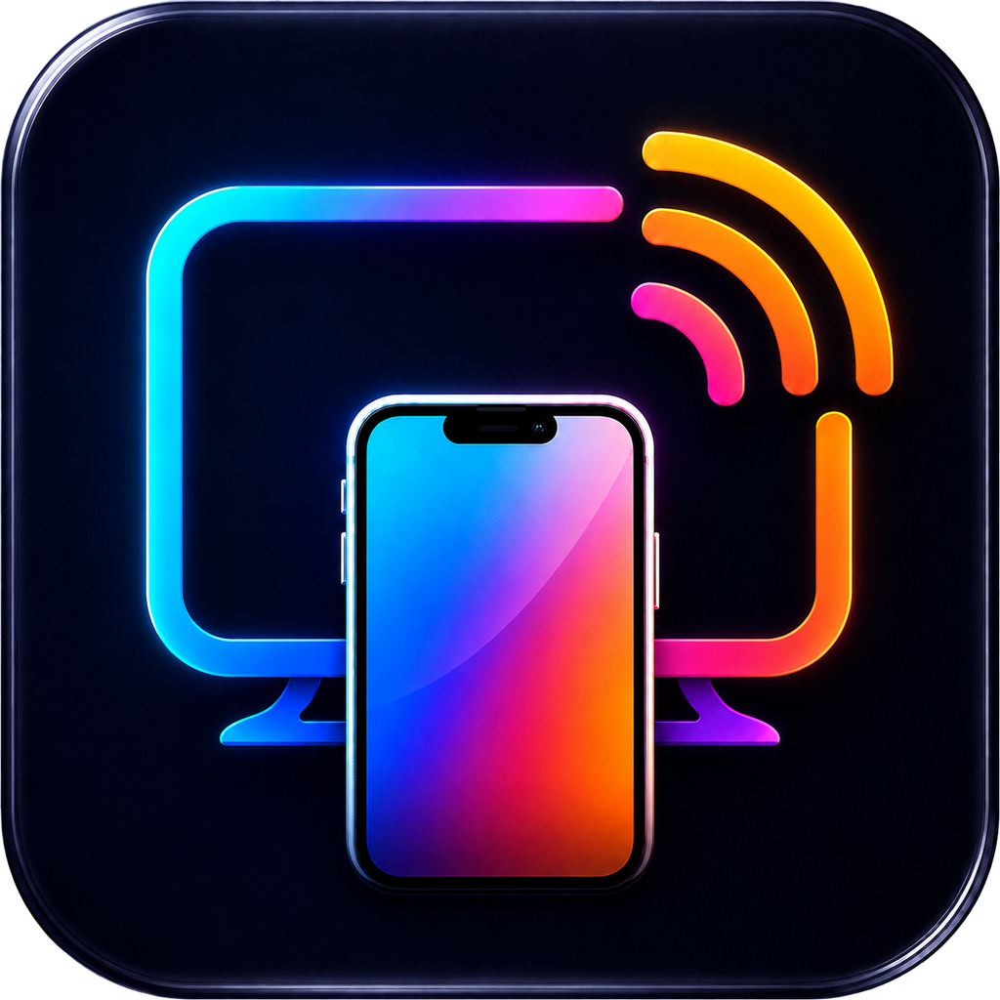

Support for the MirrorCast TV screen mirroring app
Have a question, found a bug, or want to share feedback? We usually reply within a few days.
Send us a messageMake sure your iPhone and TV are on the same Wi-Fi network, open MirrorCast, pick your TV from the list, choose Screen Mirroring, and tap Start Mirroring.
MirrorCast works with Samsung and LG smart TVs (DLNA/UPnP), and with Chromecast and Android TV devices (Google Cast).
MirrorCast needs Local Network permission to search your Wi-Fi network for compatible TVs and Chromecast devices. Without it, the app can't find any devices to mirror or cast to.
Photos access is only needed if you use the Cast Photos or Cast Videos features, so you can pick a photo or video from your library to show on the connected TV.
MirrorCast does not sell your personal data or show ads. Your mirrored screen, photos, and videos are streamed directly to your TV over your own Wi-Fi network and are never uploaded to our servers.
Open Settings, scroll to the Premium section, and tap "Have a code?" to enter it.
Open the Premium screen and tap "Restore Purchases", signed in with the same Apple ID you originally subscribed with.
A small delay between your iPhone and the TV is normal — your screen is encoded, sent over Wi-Fi, and decoded by the TV in real time, so it's never perfectly instant. For the smoothest experience: connect both your iPhone and TV to a 5GHz Wi-Fi network if your router supports it (2.4GHz is slower and more crowded), keep both devices reasonably close to the router, and avoid running other bandwidth-heavy apps (large downloads, other streaming) at the same time.
Make sure both devices stay on the same Wi-Fi network — your iPhone and your TV must be connected to the exact same network, not just two networks with internet access. Also check that you have good signal range and that your router allows local device discovery (some routers call this "AP/client isolation" — make sure it's turned off). Restarting the app or your TV's casting app can also help.
Send us an email using the button above with as much detail as possible (what happened, what you expected, and your device model).